Home
Blog
Craft
Podcast
Resources
Submit
Craft a Character!
Select from a variety of features, abilities, traits, backgrounds, and more.
Discover your Race
Select One. Click
learn more
to understand each option further.
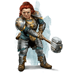
Dwarves
are short and brawny people known for mining valuable metals and battling with such ferocity that even the tallest foes shrink back.
Learn More!
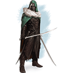
Elves
are graceful and wanderlust people known for their enchanting magics and intrinsic attunement with nature who may appear arrogant but are willing to aid those in need.
Learn More!
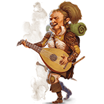
Halflings
are small and jovial people known for their simplistic way of life and working well within any community—they’re also swift and stealthy should such an occasion present itself.
Learn More!
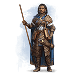
Humans
are diverse and adaptable people known for dabbling in all manners of curiosities while seeking to leave behind a reputable legacy as they’re the youngest of the common races.
Learn More!
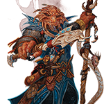
Dragonborn
are towering and formidable people known not only for their dragon kin appearance but also their fiercely loyal dedication to their respective clans as they refuse to back down.
Learn More!
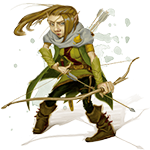
Gnomes
are little and enthusiastic people known for their massive personalities and inventive nature—always tinkering away at their latest project or casting illusions before friends and foes alike.
Learn More!
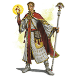
Half-Elves
are a blended race between Human and Elf. They’re known for retaining equal traits from both sides—from human ambition to the discriminating taste of the elf.
Learn More!
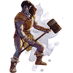
Half-Orcs
are a blended race between Human and Orc. They’re known for their savage appearance and might mingling amidst human societies or proving their worth among their Orcish brethren.
Learn More!
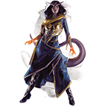
Tieflings
are an infernal and suspicious race as they’re known for their curled or pointed horns, thick tails, and saturated skin tones. Many find them unnerving due to their tainted human origins, while others utilize their services for underground means.
Learn More!
Discover your Class
Select One. Click
learn more
to understand each option further.
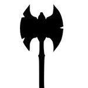
Barbarians
are fiece warriors of primitive background who can enter a battle rage.
Learn More!
Bards
are inspiring magicians whose powers echo the music of creation.
Learn More!
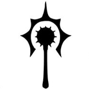
Clerics
are priestly champions who wield divine magic in service of a higher power.
Learn More!
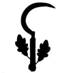
Druids
are priests of the Old Faith, wielding the powers of nature - moonlight and plant growth, fire and lightning - and adopting animal forms.
Learn More!
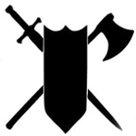
Fighters
are masters of martial combat, skilled with a variety of weapons and armor.
Learn More!
Monks
are masters of martial arts, harnessing the power of the body in pursuit of physical and spiritual perfection.
Learn More!
Paladins
are holy warriors bound to a sacred oath.
Learn More!
Rangers
are warriors who use martial prowess and nature magic to combat threats on the edges of civilization.
Learn More!
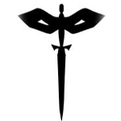
Rogues
are scoundrels who use stealth and trickery to overcome obstacles and enemies.
Learn More!
Sorcerers
are spellcasters who draw on inherent magic from a gift or bloodline.
Learn More!
Warlocks
are wielders of magic that is derived from a bargain with an extraplanar entity.
Learn More!
Wizards
are scholarly magic-users capable of manipulating the structures of reality.
Learn More!